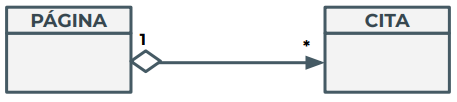

El tipo de relación más frecuente es la asociación, que es un tipo de relación entre clases que se podría definir como "tener un".
En el ejemplo anterior, cada Alumno inscrito en el centro educativo tiene unas asignaturas matriculadas. Por lo tanto, se puede dar una asociación entre la clase Alumno y la clase Asignatura, que básicamente se plasmaría añadiendo en una de las dos clases (o en las dos, dependiendo de lo que nos interese) un atributo del tipo de la otra.
Lo mismo para el Tutor y el Grupo visto anteriormente. Un ejemplo en Java:
public class Tutor {
private String nombre;
private String especialidad;
private Grupo grupo;
}
public class Grupo {
private String nombre_grupo;
}
ò al revés:
public class Tutor {
private String nombre;
private String especialidad;
}
public class Grupo {
private String nombre_grupo;
private Tutor tutor;
}
Dada la asociación,

se debe especificar:
→ En el centro, el nombre de la asociación.
→ Con una flecha se especifica la navegabilidad. Partiendo del nombre de la asociación y los métodos de las clases, se debe poder establecer cuál es la clase origen y cuál el destino.
→ La navegabilidad indica el sentido de las interacciones entre objetos: a qué clase pertenecen los objetos que pueden llamar operaciones y a qué clase los objetos que reciben estas llamadas.
→ Si no se especifica navegabilidad (sin flecha) se tratará de una asociación bidireccional, y ambas clases podrán llamar a métodos de la otra. La vemos en el siguiente apartado.
→ En cada extremo se indica la cardinalidad (como en BBDD), que debe especificar con cuantas instancias de una de las clases puede estar enlazada una instancia de la otra clase en un momento determinado de la ejecución del programa.
- Por lo tanto, un objeto de la clase Tutor siempre tiene un objeto de la clase Grupo enlazado (ya que un tutor siempre tutoriza a un grupo).
- No se puede dar el caso de que un tutor no tutorice a ningún grupo. La inversa también es cierta, todo grupo es tutorizado por algún tutor.
- El tutor puede llamar operaciones sobre el grupo, pero no al revés. Esto tiene sentido, ya que es el tutor el que controla al grupo.
Como ves, la navegabilidad y la cardinalidad son imprescindibles, ya que la decisión que se tome en estos aspectos dentro de la etapa de diseño tendrá implicaciones directas sobre la implementación.
Más ejemplos:
Con el siguiente símbolo ya se dice cuál es la relación entre los objetos de ambas clases, por lo que se pueden omitir el nombre y la función en los descriptores de la asociación.

- Una instancia cualquiera de la clase Página puede enlazar hasta un número indeterminado de objetos diferentes de la clase Cita.
- Dado un objeto cualquiera de la clase Cita, sólo estará enlazado a un único objeto Página. Por lo tanto, no se puede tener una misma cita en dos páginas diferentes (pero sí tener dos citas diferentes y de contenido idéntico, con los mismos valores para los atributos, cada una a una página diferente).
- Tampoco puede haber citas que no estén escritas en ninguna página.
Dado un cliente, este puede estar registrado en más de una sucursal, pero al menos siempre lo estará en una. Nunca se puede dar el caso de un cliente dado de alta en el sistema pero que no esté registrado en ninguna sucursal.